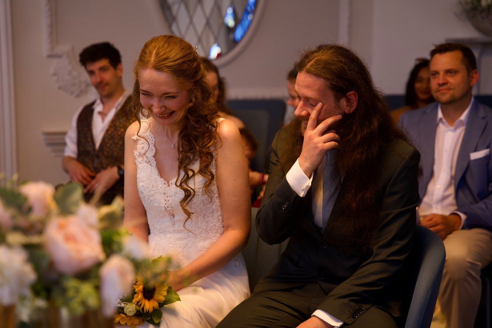
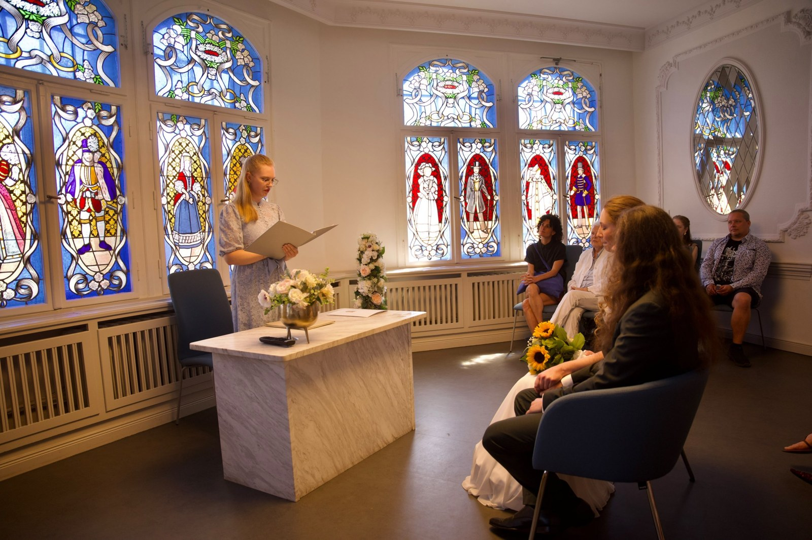
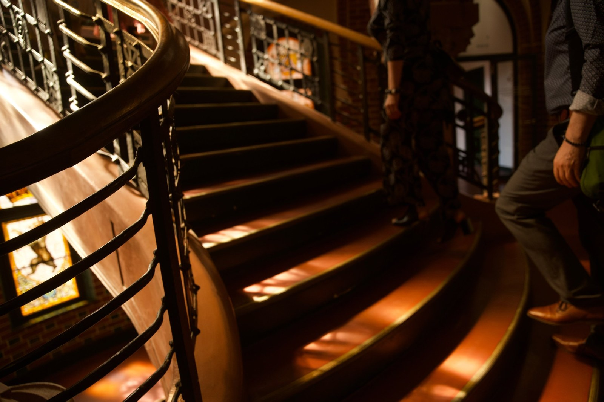

Reel
Filmed & edited by Mika
Tal Raufman
Live show@raufman_ ↗
Daniel Rubin
Live show
Ariela Baruch
Live show · social edit@arielabaruh ↗
Ariela Baruch
Live show · social edit
Live session
Double bass, drums, sax
Sofar Sounds
Rooftop show
Nada
Live at Little Stage Club, BerlinInstagram ↗
Experience
Live shows
- Tal Raufman
- Daniel RubinBarby, Tel Aviv
- NunuBarby, Tel Aviv
- Ariela Baruch
- Liam Hakmon
- Roni Kaspi (Roni Poni)
- Gali Yolus
- Nastia Rod · Peled
- NadaLittle Stage Club, Berlin
Sessions & music videos
- Edog & Shablul · "Kodesh" Live SessionFilmed and edited, with Live_Zach · 2026
- Lara Snow · "Poetry Kids"Music video · assistant photography, BTS · 2025
- Sofar SoundsRooftop show
- Live sessionDouble bass, drums, sax
Events & press
- WeddingsCeremony and reception, Berlin
- Press shotsPortraits for musicians
- Own music videos and live contentAs the artist Mikamir
Photo
Press shots · weddings




